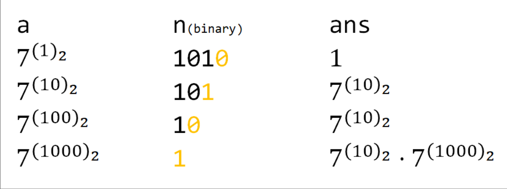

更新时间线
添加了关于矩阵快速幂问题的了解 以及 自己的理解
斐波那契矩阵快速幂解决思路
POJ 3050
POJ 3150有待进一步解决
更新了快速幂的算法初步
两道很简单的ACWing 的训练题
初步涉及矩阵快速幂问题
快速幂算法初步
什么是快速幂
快速幂 （Exponentiation by squaring ，平方求幂）是一种简单而有效的小算法，它可以以O ( l o g ( n ) ) O(log(n)) O ( l o g ( n ))
在对某个底数a a a
幂运算的速度如何再次优化并使得结果好于O ( n ) O(n) O ( n )
当指数过大的时候 数据范围超过机器最大可以表示的范围。
取模的运算法则
当数据范围过大的时候有些题目需要让我们取某一个数的模。于是下面引入 加、减、乘、指数运算的时候的模运算法则
( a + b ) % d = ( a % d + b % d ) % d ( a − b ) % d = ( a % d − b % d ) % d ( a ∗ b ) % d = ( a % d ∗ b % d ) % d a b % d = ( a % d ) b % d (a+b)\%d = (a\% d+b\%d)\%d \\
(a-b)\%d = (a\% d-b\%d)\%d \\
(a*b)\%d = (a\% d*b\%d)\%d \\
a^{b}\%d = (a\% d)^{b}\%d \\
( a + b ) % d = ( a % d + b % d ) % d ( a − b ) % d = ( a % d − b % d ) % d ( a ∗ b ) % d = ( a % d ∗ b % d ) % d a b % d = ( a % d ) b % d
如何加速运算
二分思想：
例如: 原本求$$3^{10}$$ 可以写成$$9^{5}$$==$$81^{2}9$$
写出一个递归方程
a n = { a n 2 a n 2 , n i s e v e n n o t 0 a n − 1 a , n i s o d d 1 , n = 0 a^{n} =
\begin{cases}
a^{\frac{n}{2}}a^{\frac{n}{2}}, & n\ is\ even \ not \ 0\\
a^{n-1}a, & n \ is \ odd \\
1, & n=0
\end{cases}
a n = ⎩ ⎨ ⎧ a 2 n a 2 n , a n − 1 a , 1 , n i s e v e n n o t 0 n i s o dd n = 0
简单快速幂实现的两种方式
递归快速幂
按照上面的递归方程很容易写出递归算法
1 2 3 4 5 6 7 8 9 10 11 int exponentiation_by_squaring (int a,int b) if (b==0 ){ return 1 ; }else if (b%2 ==0 ){ return exponentiation_by_squaring (a*a,b/2 ); }else { return a*exponentiation_by_squaring (a,b-1 ); } }
鉴于上面所说，由于指数过大的时候数据范围超出表示，所以我们需要对结果进行取模运算，于是对上述的代码进行小小的改进就可以得到如下的代码：
1 2 3 4 5 6 7 8 9 10 11 12 13 int exponentiation_by_squaring (int a,int b) if (b==0 ){ return 1 ; }else if (b%2 ==0 ){ a %= N; return exponentiation_by_squaring (a*a,b/2 )%N; }else { a %= N; return a*exponentiation_by_squaring (a,b-1 )%N; } }
tips: 需要特别注意，请看清楚数据的表示范围如果，需要运算的数据过大 这里的参数类型以及函数范围类型设置为int是不合理的需要设置成 long long
记住 2 32 = 4294967296 2^{32}=4294967296 2 32 = 4294967296
非递归快速幂
理解了递归快速幂的算法过程之后非递归的快速幂算法实现需要结合一点位运算的思想
例如以下使用7为底数求7 10 7^{10} 7 10 ( 1010 ) 2 (1010)_{2} ( 1010 ) 2
非递归快速幂相较于递归快速幂的好处就是减少了对递归栈的空间占用。

1 2 3 4 5 6 7 8 9 10 11 int exponentiation_by_squaring (int a,int b) int res = 1 ; while (b){ if (b&1 ) res *=a; a*=a; b>>=1 ; } return res; }
快速幂的典型例题
快速幂拓展
1 2 3 4 5 6 7 8 9 10 11 12 13 template <typename T>T exponentiation_by_squaring (T a, ll n) T ans = 1 ; while (n) { if (n & 1 ) ans = ans * a; n >>= 1 ; a = a * a; } return ans; }
矩阵快速幂
举证快速幂前置知识：矩阵乘法
A ⋅ B = D d i j = ∑ k = 1 n a i k b k j A\cdot B = D \\
d_{ij} = \sum_{k=1}^{n}a_{ik}b_{kj}
A ⋅ B = D d ij = k = 1 ∑ n a ik b kj
C++:
这里的矩阵使用一个二维数组表示
1 2 3 4 5 6 7 8 9 10 11 12 void multi_matrix (int a[][N],int b[][N],int n) for (int i = 0 ;i<n;++i){ for (int j = 0 ;j<n;++j){ for (int k = 0 ;k<n;++k){ c[i][j] = a[i][k]*b[k][j]; } } } }
tips: 这里的矩阵乘积的时间复杂度是 O ( n 3 ) O(n^{3}) O ( n 3 )
关于最简单的举证快速幂 只要将快速幂算法中的底数换成矩阵就可以了
1 2 3 4 5 6 7 8 9 10 11 12 13 14 15 16 17 18 19 20 21 22 23 24 25 26 27 28 29 30 31 32 33 34 35 36 37 #include <iostream> #include <cstring> using namespace std;#define N 100 int c[][N]; int res[N][N]void multi_matrix (int a[][N],int b[][N],int n) for (int i = 0 ;i<n;++i){ for (int j = 0 ;j<n;++j){ for (int k = 0 ;k<n;++k){ c[i][j] = a[i][k]*b[k][j]; } } } for (int i = 0 ;i<n;++i){ for (int j = 0 ;j<n;++j){ a[i][j] = c[i][j]; } } } void matrix_exponentiation_by_squaring (int a[][N],int n) memset (res,0 ,sizeof (res)); for (int i = 0 ;i<n;++i){ res[i][i] = 1 ; } while (n){ if (n&1 ) multi (res,a,n); multi (a,a,n); n>>=1 ; } }
矩阵快速幂解决斐波那契数列问题
open 参考文章
关于矩阵快速幂计算斐波那契数列的基本思想就是：斐波那契数列可以写作一个矩阵乘积式子如下：
[ F i b o n a c c i n F i b o n a c c i n − 1 ] = [ 1 , 1 1 , 0 ] × [ F i b o n a c c i n − 1 F i b o n a c c i n − 2 ] \left[
\begin{matrix}
Fibonacci_{n}\\
Fibonacci_{n-1}\\
\end{matrix}
\right]
=
\left[
\begin{matrix}
1,1\\
1,0
\end{matrix}
\right]
\times
\left[
\begin{matrix}
Fibonacci_{n-1}\\
Fibonacci_{n-2}\\
\end{matrix}
\right]
[ F ib o na cc i n F ib o na cc i n − 1 ] = [ 1 , 1 1 , 0 ] × [ F ib o na cc i n − 1 F ib o na cc i n − 2 ]
根据这个公式推导下去 求一个$$Fibonacci_{n}=A^{n-2}\times Fib_{init} \ \ (n\ge3)$$ 就是这样的公式
不难得出对应的代码
1 2 3 4 5 6 7 8 9 10 11 12 13 14 15 16 17 18 19 20 21 22 23 24 25 26 27 28 29 30 31 32 33 34 35 36 37 38 39 40 41 42 43 44 45 46 47 48 49 50 51 52 53 54 55 56 57 58 59 #include <iostream> #include <cstring> using namespace std;const int M = 2 ; const int N = 2 ;const int C = 1000001 ;struct Matrix { long long a[M][N]; Matrix (){ memset (a,0 ,sizeof (a)); } Matrix operator * (const Matrix b){ Matrix ans; for (int i = 0 ;i<M;++i) for (int j = 0 ;j<N;++j) for (int k = 0 ;k<N;++k) ans.a[i][j] += (a[i][k]*b.a[k][j]); return ans; } void operator = (const Matrix b){ for (int i = 0 ;i<M;++i) for (int j = 0 ;j<N;++j) a[i][j] = b.a[i][j]; } }; int exponentiation_by_squaring (int x) Matrix ans,trans; ans.a[0 ][0 ] = 1 ; ans.a[1 ][0 ] = 1 ; trans.a[0 ][0 ] = trans.a[0 ][1 ] = trans.a[1 ][0 ] = 1 ; while (x){ if (x&1 )ans = trans*ans; trans = trans*trans; x >>= 1 ; } for (int i = 0 ;i<M;++i) for (int j = 0 ;j<N;++j) cout<<"i: " <<i<<" j: " <<j<<" ans: " <<ans.a[i][j]<<endl; return ans.a[1 ][0 ]; } int main () int n; while (1 ){ cin>>n; cout<<exponentiation_by_squaring (n-1 )<<endl; } return 0 ; }
将上面的代码稍稍改动一下就是POJ 3070 题的AC代码了
502 Bad Gateway (poj.org)
3150 – Cellular Automaton (poj.org)
英文能力有待提高啊 哭…
TODO
[x] 关于矩阵快速幂的拓展
[x] POJ 3070
[x] poj 3150
[ ] 关于矩阵乘积更快的算法的学习
[x] 矩阵快速幂解决斐波那契数列